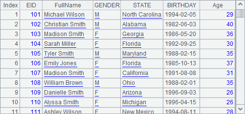
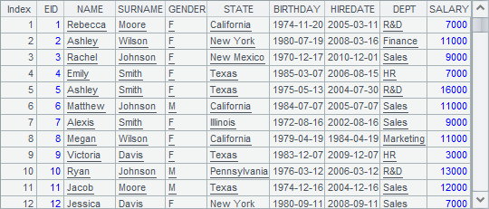

Once esProc Enterprise is installed, there is the complete QVS project, also known as esProc Enterprise Multifunction Server, under the product¡¯s installation directory. The specific directory where the project is accommodated is [installation directory]\esProc\q-server. In [installation directory]\esProc\q-server\lib, there are basic jar files used by the esProc Enterprise and QJDBC. Apart from these, you also need ecloud-xxxx.jar to deploy cloud storage functionality for the esProc Enterprise.
The QVS startup file is StartQVS.bat (StartQVS.sh under Linux), which is located in [installation directory]\esProc\bin. The local QVS server will by default automatically started. Go to Scudata SPL Cloud Deployment to learn more or change the existing configurations. Below is the QVS interface after it is successfully started:

QJDBC is the JDBC Enterprise with QVS functionality built in. Its driver class is com.esproc.jdbc.QDriver, and the URL is jdbc:esproc:q:local://. You can directly use the following functions when QJDBC is started.
|
|
A |
|
1 |
=Qconnect("http://localhost:8090/qvs":"demoqvs",30,300) |
|
2 |
=Qdirectory("test/") |
|
3 |
=Qfile("test/cities.txt") |
|
4 |
=A3.import@t() |
|
5 |
=Qenv("arg1", "Sale") |
|
6 |
=Qenv("arg1") |
|
7 |
=A1.exec@x("test/FindEmployees1.splx";A6) |
|
8 |
>A1.close() |
A1 executes Qconnect(url:v, wt, it) to connect to the QVS server in the specific URL; the verification is demoqvs, the maximum wait time is 30 seconds and the maximum idle time is 300 seconds. Once connected, it can perform remote services.
A2 uses Qdirectory(path) function to get a list of names of all files under the specified path.
A3 uses Qfile(fn) function to retrieve the specified file and return a file object. Then we can further compute it, such as importing data of the file into a table sequence.
A5 uses Qenv(name, value) function set up a global variable, and A7 reads the global variable.
|
|
A |
|
1 |
$(demo) select * from EMPLOYEE where DEPT = ?;arg1 |
|
2 |
>output("before return") |
|
3 |
return A1 |
A7 uses A1¡¯s connection object to execute the splx cellset file. It uses A6¡¯s value as the query parameter, and A8 closes the connection. Below is the query result of A7:

The Qconnect(), Qdirectory(), Qfile() and Qenv()used in the above example code are functions for executing QJDBC. They also called Q functions. The other Q functions supported by QJDBC are Qmove(), Qload() and Qlock(). Go to Function Reference to learn more about them.
In addition to using a Q function to access QVS, we can also employ the remote server in esProc Enterprise. Find more related content in Deploy and Use RSRV in esProc Enterprise Edition.